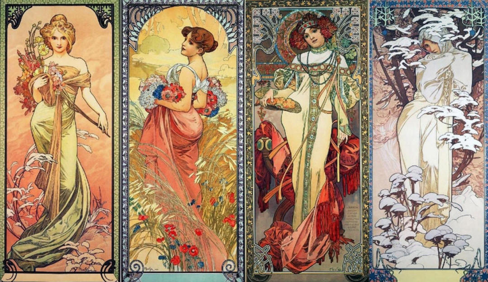
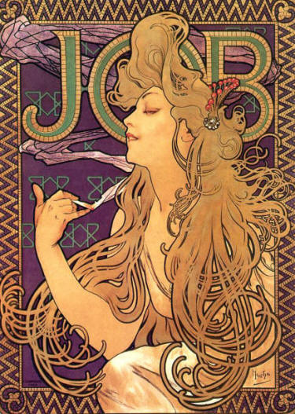
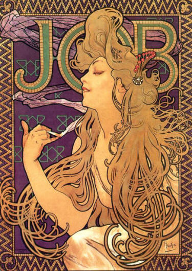

%20Альфонс%20Муха.%20«Автопортрет»,%201899.jpg)
АЛЬФОНС МУХА
Автопортрет (1899 год)
Муха известен своими афишами, этикетками и оформлением
интерьеров и украшений с его фирменными «Женщинами Мухи»: роскошные, они
величественно и в то же время спокойно стояли в древних богатых нарядах или
легких воздушных платьях в окружении растений и орнаментов. Его афиши
становились революцией в плакатном дизайне, одновременно с этим развивалась
типография, в частности литография (разновидность печатной графики, основанная
на технике плоской печати: под давлением краска переносится с печатной формы на
бумагу). На художника повлияли работы Ганса Макарта.
Муха в своих работах использовал природные и естественные цвета: желтый,
оранжевый, коричневый, зеленый, персиковый. Для кожи героинь часто брались
желтоватые оттенки. Теней либо вообще не было, либо они не были яркими, художник
растушевывал и приглушал их, создавая чарующую и нежную атмосферу. На контрасте
с этим он вырисовывал жирные темные контуры, при чем толщина практически не
менялась даже на тонких вещах, например, прядей волос, и он также использовал
это для создания динамики и некоторого кругового орнамента из волос, что так же
его выделяло.
Еще одной особенной чертой Мухи можно отметить внешность его героинь, они были
преимущественно рыжеволосые, русые или светловолосы, они также были немного
пухлыми и мягкими, иногда будто сонные, спокойные, производили впечатление
безмятежных и чудесных женщин в счастливом достатке, они напоминали героинь
картин прошлых столетий, изображавшихся в истории о мифе, что еще больше
погружало любителя «Женщин Мухи» во что-то возвышенное.
В 1900 А. Муха обратился к австрийскому правительству и получил заказ на
создание фресок для павильона Боснии и Герцеговины, которые позже будут
выставлены на Парижской «Всемирной Выставке» 1900 года.
Показ работ на выставке дал Мухе возможность двигаться в совершенно другом
направлении, к крупномасштабным историческим картинам, которыми он восхищался в
Вене. Это также позволило ему выразить свой чешский патриотизм.
Именно во время Всемирной выставки Альфонс всерьез занялся изучением истории
славянских народов.
_(14338412749).jpg)
_(14524535382).jpg)
Фрески в Боснии и Герцеговины, 1900 год
Незадолго до выставки, как он писал в своих мемуарах: «Я
не находил настоящего удовлетворения в своей старой работе. Я видел, что мой
путь лежит в другом месте, немного выше. Я искал способ распространить свет,
проникающий даже в самые темные уголки. Мне не пришлось долго искать. The Pater Noster (Отче
наш): почему бы не дать словам изобразительное выражение?».
Рисунки «Le Pater» («Отче наш»)
визуализировали духовное прозрение и личную философию художника. Муха создал
образ для каждой строки «Отче наш». Идея произведений заключалась в том, что
Красота, Правда и Любовь являются тремя основами для человечества.
Страницы выполнены в черно-белом варианте, резким
контрастом света и тени. Изображаются толпы людей и существ, они чем-то
встревожены, застывают в мученических, но с надеждой в душе, позах.


После утомляющей работы над многочисленными заказами в
Париже Альфонс Муха уезжает в США с мыслью о том, что
его прежнее творчество исчерпало себя, и он
начал задумывался о создании грандиозного цикла эпических картин на тему истории
славян. Первые эскизы появились в 1903-м, некоторые он отправлял отцу и
писал, что «это можно назвать поэтизацией истории, но это не декоративная
живопись»
«На самом деле я некоторое время готовился приехать
сюда. Я понял, что я не мог делать что мне нравится; если бы я не убежал от
марафона заказов в Париже, мне бы постоянно приходилось иметь дело с клиентами и
их капризами… в Америке я не ожидаю найти для себя богатство, комфорт или славу,
а только возможность сделать что-то более полезное».
Итогом стала невероятно мощный цикл масштабных
работ «Славянская эпопея», изображавших значимые события из жизни славянского
народа
Работа растянулась на 18 лет
и была завершена к десятилетию провозглашения Чехословацкой Республики.
Работы:
«Жисмонда» - 1894-1895 гг., именно эта работа произвела фурор в художественном сообществе и начала «высокий» период Мухи. Величественная, героиня одета в украшенные орнаментами роскошные одеяния и держит растение
«Времена года» - серия работ 1896, 1897,
и 1900 годов. Каждая работа из одного периода поделена на как бы еще четыре
работа – по одной на каждый сезон. Классика «Женщин Мухи». Цветовая палитра и
элементы одежды и окружения каждого фрагмента соответствует сезону.

Весна Лето Осень Зима

Весна Лето Осень Зима

Весна Лето Осень Зима
«Цветы»
Гвоздика Лилия Ирис Роза
«Драгоценные камни» - цикл работ 1900 года, изображающий четыре драгоценных камня: рубин, аметист, изумруд и топаз. Каждая женщина в работах олицетворяет свой камень, обладает характером, ассоциируемый с камнем, и носит украшения с ним.

«Biscuits
Le
Fevre-Utile» (1896)
 

«Пиво из Мааса» (1897)

«
Автопортрет (1907 и 1926 гг. соответсвенно)

Оформление ювелирного салона Жоржа Фуке – 1901 год, этот поистине тяжелый труд
стал венцом сотрудничества Фуке и Мухи, ранее вместе создававшие дизайны
украшений. Публика была в восторге: фасад
украсили роскошные «женщины Мухи», интерьер был наполнен декором с цветочными
и природными мотивами.
Плакат Мод Адамс в роли Жанны д'Арк - 1909 год


Славянская эпопея, серия работ (1910-1928
гг.)